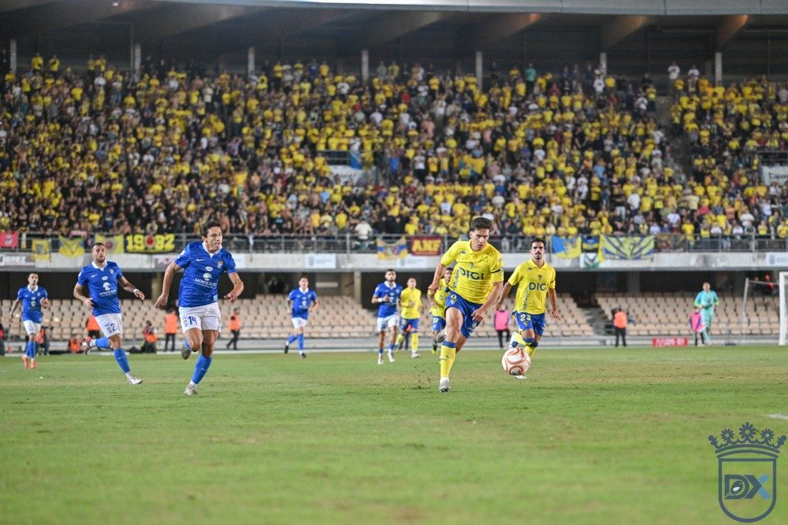

Xerez can turn up the pressure at the top in a round without the leaders

Photo: Diario XerecistaWith Recreativo de Huelva playing the Copa Federación final in Sestao and a Badajoz-Don Benito clash at the top, Xerez CD have a chance against Antoniano to close the gap on the front-runners and establish themselves in the top five.
Matchday 11 of Segunda RFEF, Group IV, comes with a fixture list that favours Xerez CD. The leaders, Recreativo de Huelva, will not play this weekend because they play the Copa Federación final against Sestao River on Saturday at 19:00 at Las Llanas, in Sestao. Their league game against Sevilla Atlético has been postponed to Wednesday 25 November at 18:00.
Head-to-head in Badajoz
In addition, two of the teams at the top face each other: Badajoz, fourth on 17 points, host Don Benito, second on 20, on Sunday at 17:00 at the Nuevo Vivero, in an Extremadura derby that the Badajoz club has declared a Club Half-Day. One of them, or both if they draw, will drop points.
Xerez, fifth on 15 points, host Antoniano, sixteenth on 6, on Sunday 15 at 18:00 at the Pedro Garrido. A win would take them to 18 points, three behind Recreativo, who will have a game in hand. If Badajoz also lose, the blue-and-whites would climb to fourth.
From crisis to the top places
This scenario seemed unthinkable a month and a half ago. On 27 September, Xerez lost 1-0 at Recreativo in Huelva on matchday 4. They had 2 points from 12 at the time, and the club sacked Xavi Molist.
Since then, the team has taken 13 of a possible 18 points: wins over Tenerife B, Marbella, Tamaraceite and Atlético Sanluqueño, a draw against Betis B and just one defeat, against Ciudad de Lucena.
A tight battle
Behind them, the battle remains very even: Betis B, sixth, also have 15 points and a game in hand against Tenerife B, while Mijas Las Lagunas, Estepona and Atlético Central have the same points as Xerez.
🇪🇸 Leer en español ← Back to home